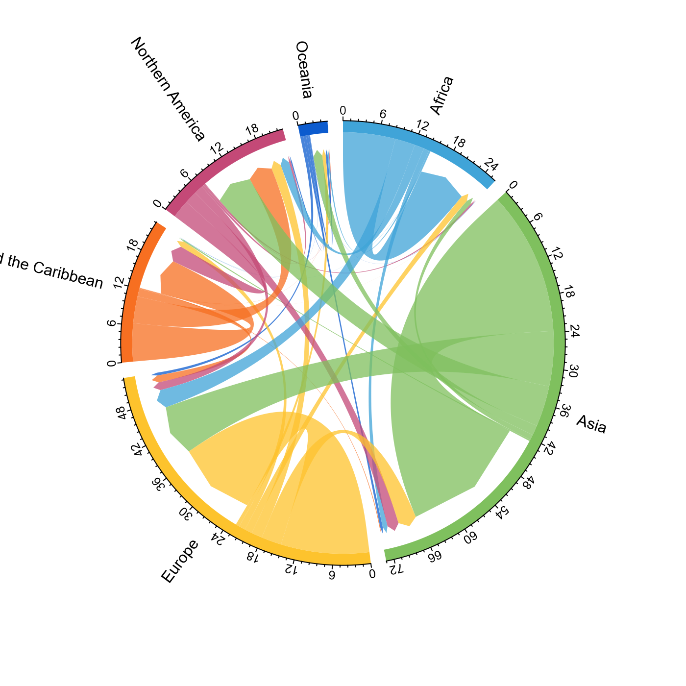
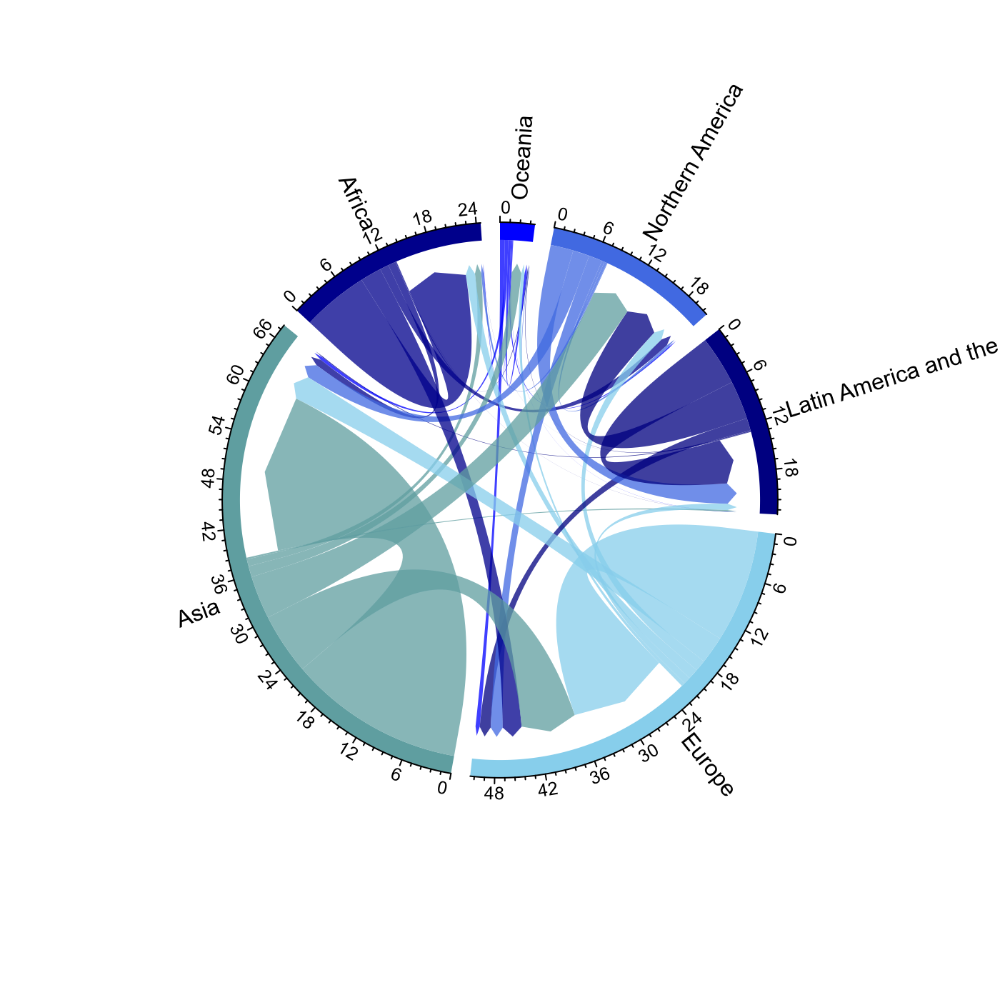
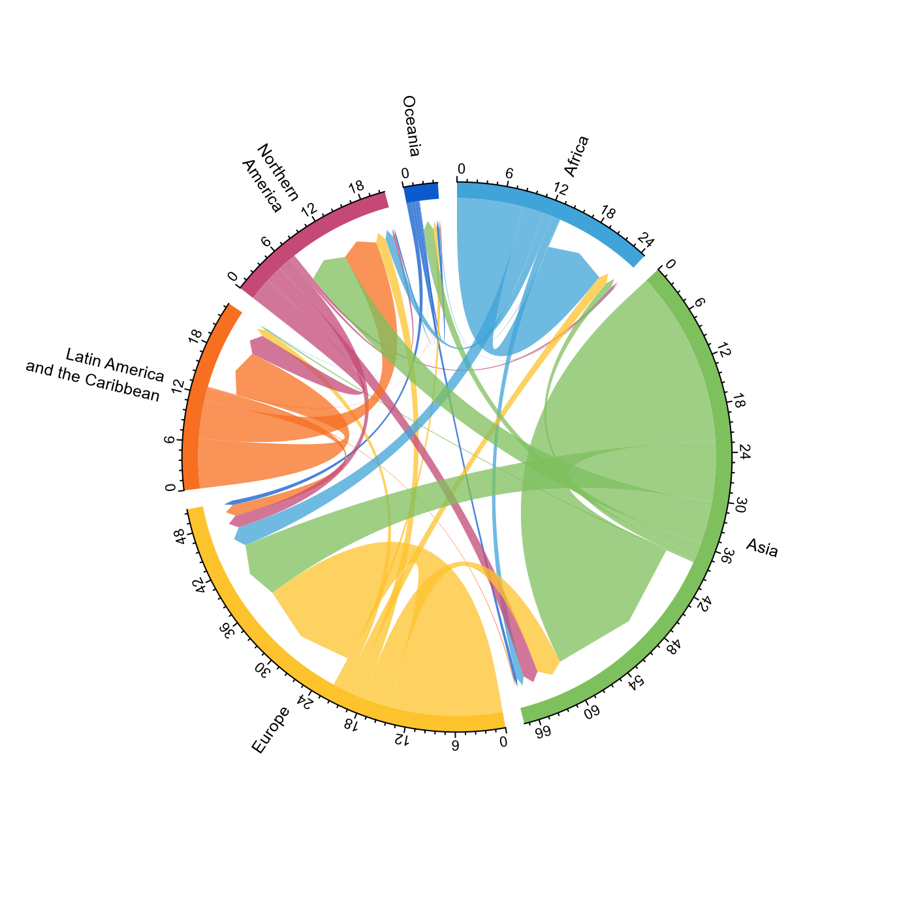
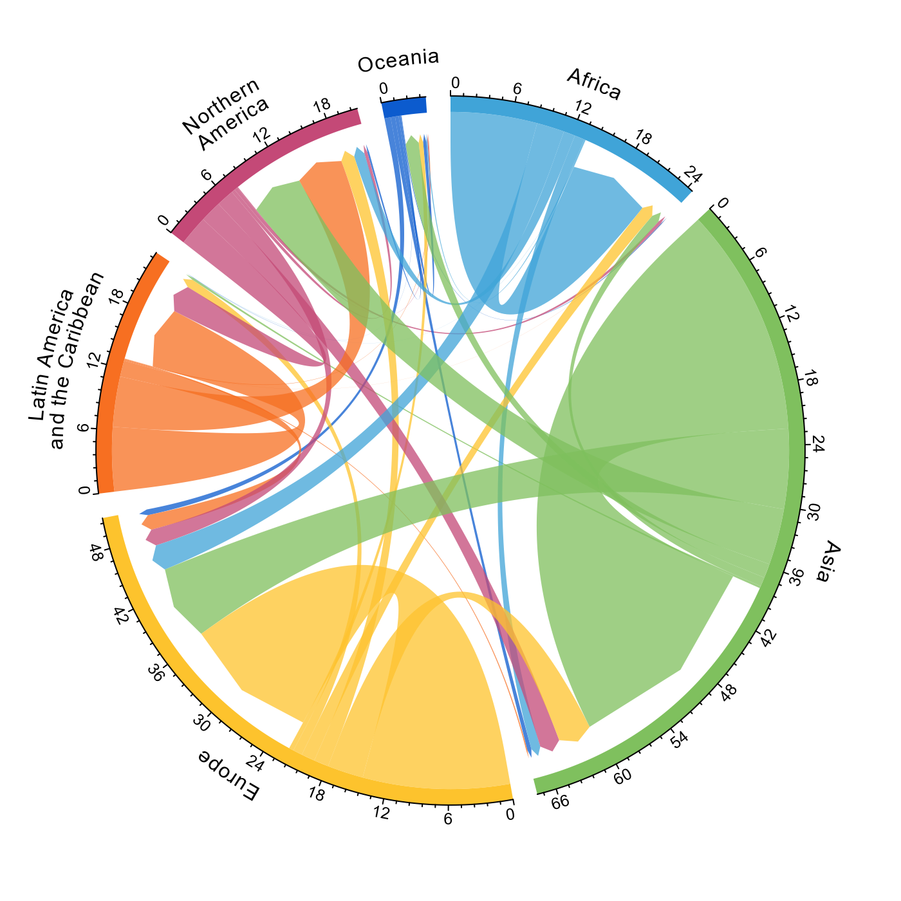

Adaption of circlize::chordDiagramFromDataFrame() with defaults set to allow for more effective visualisation of directional origin-destination data
mig_chord(
x,
lab = NULL,
lab_bend1 = NULL,
lab_bend2 = NULL,
label_size = 1,
label_nudge = 0,
label_squeeze = 0,
axis_size = 0.8,
axis_breaks = NULL,
...,
no_labels = FALSE,
no_axis = FALSE,
clear_circos_par = TRUE,
zero_margin = TRUE,
start.degree = 90,
gap.degree = 4,
track.margin = c(-0.1, 0.1),
points.overflow.warning = FALSE
)Data frame with origin in first column, destination in second column and bilateral measure in third column
Named vector of labels for plot. If NULL will use names from d
Named vector of bending labels for plot. Note line breaks do not work with facing = "bending" in circlize.
Named vector of second row of bending labels for plot.
Font size of label text.
Numeric value to nudge labels towards (negative number) or away (positive number) the sector axis.
Numeric value to nudge lab_bend1 and lab_bend2 labels apart (negative number) or together (positive number).
Font size on axis labels.
Numeric value for how often to add axis label breaks. Default not activated, uses default from circlize::circos.axis()
Arguments for circlize::chordDiagramFromDataFrame().
Logical to indicate if to include plot labels. Set to FALSE by default.
Logical to indicate if to include plot axis. Set to FALSE by default.
Logical to run circlize::circos.clear(). Set to TRUE by default. Set to FALSE if you wish to add further to the plot.
Set margins of the plotting graphics device to zero. Set to TRUE by default.
Argument for circlize::circos.par().
Argument for circlize::chordDiagramFromDataFrame().
Argument for circlize::chordDiagramFromDataFrame().
Argument for circlize::chordDiagramFromDataFrame().
Chord diagram based on first three columns of x. The function tweaks the defaults of circlize::chordDiagramFromDataFrame() for easier plotting of directional origin-destination data. Users can override these defaults and pass additional tweaks using any of the circlize::chordDiagramFromDataFrame() arguments.
The layout of the plots are designed to specifically work on plotting images into PDF devices with widths and heights of 7 inches (the default dimension when using the pdf function). See the end of the examples for converting PDF to PNG images in R.
Fitting the sector labels on the page is usually the most time consuming task. Use the different label options, including line breaks, label_nudge, track height in preAllocateTracks and font sizes in label_size and axis_size to find the best fit. If none of the label options produce desirable results, plot your own using circlize::circos.text having set no_labels = TRUE and clear_circos_par = FALSE.
# \dontrun{
library(tidyverse)
library(countrycode)
# download Abel and Cohen (2019) estimates
f <- read_csv("https://ndownloader.figshare.com/files/26239945")
#> Rows: 235236 Columns: 9
#> ── Column specification ────────────────────────────────────────────────────────
#> Delimiter: ","
#> chr (2): orig, dest
#> dbl (7): year0, sd_drop_neg, sd_rev_neg, mig_rate, da_min_open, da_min_close...
#>
#> ℹ Use `spec()` to retrieve the full column specification for this data.
#> ℹ Specify the column types or set `show_col_types = FALSE` to quiet this message.
# use dictionary to get region to region flows
d <- f %>%
mutate(
orig = countrycode(
sourcevar = orig, custom_dict = dict_ims,
origin = "iso3c", destination = "region"),
dest = countrycode(
sourcevar = dest, custom_dict = dict_ims,
origin = "iso3c", destination = "region")
) %>%
group_by(year0, orig, dest) %>%
summarise_all(sum) %>%
ungroup()
d
#> # A tibble: 216 × 9
#> year0 orig dest sd_drop_neg sd_rev_neg mig_rate da_min_open da_min_closed
#> <dbl> <chr> <chr> <dbl> <dbl> <dbl> <dbl> <dbl>
#> 1 1990 Africa Africa 4297155 7845712 4979307 6902972 7429916
#> 2 1990 Africa Asia 240464 258816 659002 287789 690446
#> 3 1990 Africa Europe 554285 662901 1734769 809487 1303377
#> 4 1990 Africa Latin… 1439 2624 7032 8452 12138
#> 5 1990 Africa North… 288992 301617 203364 318842 335302
#> 6 1990 Africa Ocean… 21541 23533 60019 27919 25460
#> 7 1990 Asia Africa 94088 158903 182438 104503 318467
#> 8 1990 Asia Asia 3616112 8617460 13154071 6839964 9534627
#> 9 1990 Asia Europe 1495859 2322557 4987315 2855373 4465086
#> 10 1990 Asia Latin… 14156 14183 97518 19285 44768
#> # … with 206 more rows, and 1 more variable: da_pb_closed <dbl>
# 2015-2020 pseudo-Bayesian estimates for plotting
pb <- d %>%
filter(year0 == 2015) %>%
mutate(flow = da_pb_closed/1e6) %>%
select(orig, dest, flow)
pb
#> # A tibble: 36 × 3
#> orig dest flow
#> <chr> <chr> <dbl>
#> 1 Africa Africa 8.46
#> 2 Africa Asia 0.984
#> 3 Africa Europe 2.72
#> 4 Africa Latin America and the Caribbean 0.0207
#> 5 Africa Northern America 1.13
#> 6 Africa Oceania 0.118
#> 7 Asia Africa 0.895
#> 8 Asia Asia 22.4
#> 9 Asia Europe 7.83
#> 10 Asia Latin America and the Caribbean 0.215
#> # … with 26 more rows
# pdf(file = "chord.pdf")
mig_chord(x = pb)

# dev.off()
# file.show("chord.pdf")
# pass arguments to circlize::chordDiagramFromDataFrame
# pdf(file = "chord.pdf")
mig_chord(x = pb,
# order of regions
order = rev(unique(pb$orig)),
# spacing for labels
preAllocateTracks = list(track.height = 0.3),
# colours
grid.col = c("blue", "royalblue", "navyblue", "skyblue", "cadetblue", "darkblue")
)
#> Warning: Since you have set `order`, you should better set `grid.col` as a named
#> vector where sector names are the vector names, or else the color will
#> be wrongly assigned.

# dev.off()
# file.show("chord.pdf")
# multiple line labels to fit on longer labels
r <- pb %>%
sum_region() %>%
mutate(lab = str_wrap_n(string = region, n = 2)) %>%
separate(col = lab, into = c("lab1", "lab2"), sep = "\n", remove = FALSE, fill = "right")
#> Asking for more lines than words
#> Asking for more lines than words
#> Asking for more lines than words
#> Asking for more lines than words
r
#> # A tibble: 6 × 8
#> region out_mig in_mig turn net lab lab1 lab2
#> <chr> <dbl> <dbl> <dbl> <dbl> <chr> <chr> <chr>
#> 1 Africa 4.97 2.65 7.62 -2.32 "Afri… Afri… NA
#> 2 Asia 15.8 7.17 23.0 -8.65 "Asia" Asia NA
#> 3 Europe 7.66 14.5 22.1 6.80 "Euro… Euro… NA
#> 4 Latin America and the Caribbean 6.70 4.09 10.8 -2.61 "Lati… Lati… and …
#> 5 Northern America 7.17 13.2 20.3 5.98 "Nort… Nort… Amer…
#> 6 Oceania 1.33 2.12 3.45 0.793 "Ocea… Ocea… NA
# pdf(file = "chord.pdf")
mig_chord(x = pb,
lab = r %>%
select(region, lab) %>%
deframe(),
preAllocateTracks = list(track.height = 0.25),
label_size = 0.8,
axis_size = 0.7
)

# dev.off()
# file.show("chord.pdf")
# bending labels
# pdf(file = "chord.pdf")
mig_chord(x = pb,
lab_bend1 = r %>%
select(region, lab1) %>%
deframe(),
lab_bend2 = r %>%
select(region, lab2) %>%
deframe()
)

# dev.off()
# file.show("chord.pdf")
# convert pdf to image file
# library(magick)
# p <- image_read_pdf("chord.pdf")
# image_write(image = p, path = "chord.png")
# file.show("chord.png")
# }